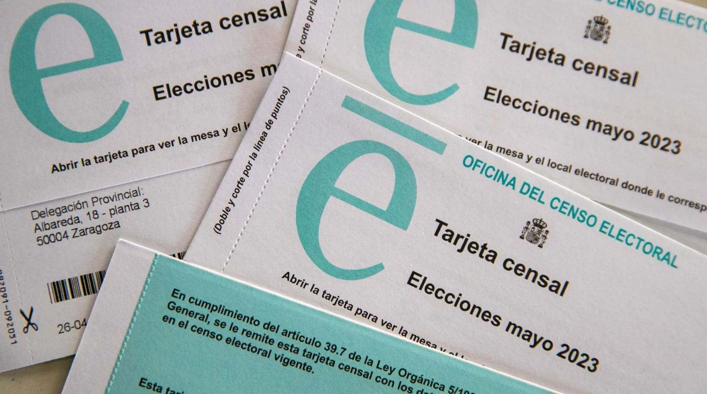
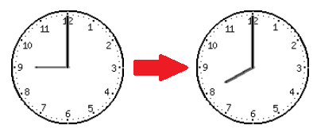
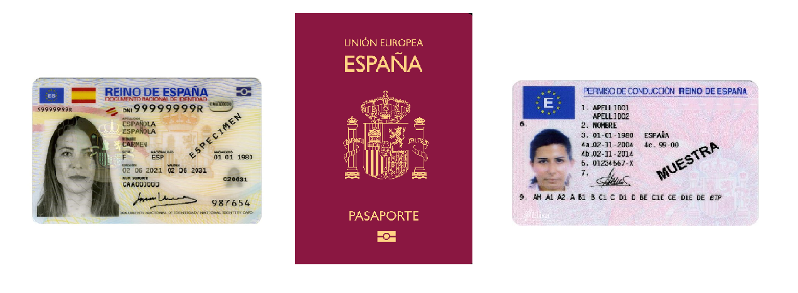
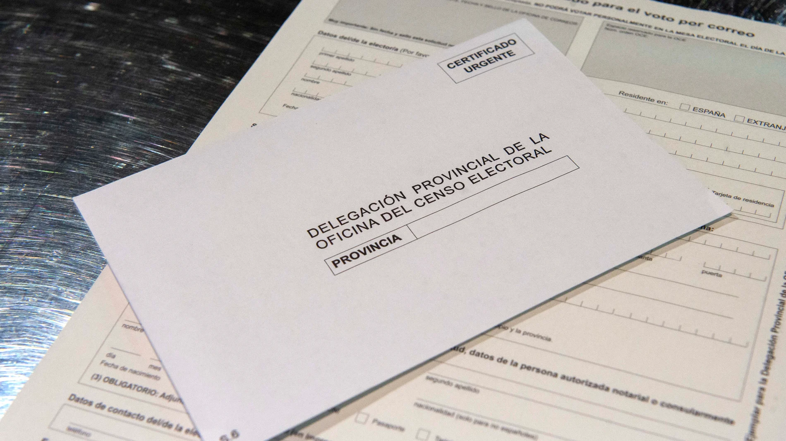

Modalidades de voto
Voto presencial
Los electores podrán ejercer su derecho al voto el día 23 de Julio en el colegio electoral que le corresponda. Para saber donde votar, recibirá a su domicilio una targeta censal en el que le indicara en que local electora pordrá votar el dia del las elecciones.
El día de la votación, los colegios electorales abrirán de las 9 de la mañana y cerrarán a las 8 de la tarde.
Para votar, hay que presentar el DNI, pasaporte o carnet de conducir.
Voto por correo
Aquellas personas que no puedan ir a votar el dia de los comicios, pueden votar por correo. Para ello deberán acudir a cualquier oficina de correos y presentar la solicitud no más del 13 de Julio. Tambíen se puede solicitar en la página web de Correos
Una vez reciba la documentación eletoral a su domicilio, tiene hasta el 20 de julio para enviar su voto por correo certificado en cualquier oficina de Correos
SI SOLICITAS EL VOTO POR CORREO, NO PODRAS VOTAR DE MANERA PRESENCIAL NI TELEMÁTICA
Voto telemático
En estas elecciones, se utiliza por primera vez el voto telemático. Mediante esta modalidad de voto, los electores podrán votar desde su dispositivo móvil u ordenador.
El voto telemático estará disponible del dia 17 de Julio al 20 de Julio. Para poder votar con este nuevo método, deberá acceder al enlace que se muestra a continuación, introducir su DNI y seleccionar a la candidatura que quieren votar y enviar el voto.
SI VOTAS TELEMÁTICAMENTE, NO PODRAS VOTAR DE MANERA PRESENCIAL